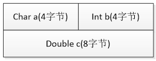
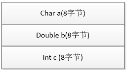
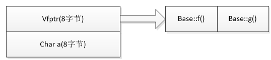
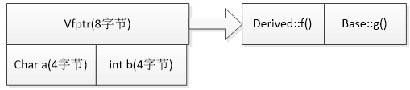

面向对象编程（OOP，Object Oriented Programming）是一种特殊的、设计程序的概念性方法。
C++中的Class则是实现这一方法的重要组成部分，类是 C++ 的核心特性，通常被称为用户定义的类型。指定基本类型完成了三项工作：
- 决定数据对象需要的内存数量；
- 决定如何解释内存中的位；
- 决定可使用数据对象执行的操作或方法；
1. Class大小相关因素
类的大小与它的构造函数、析构函数以及其他成员函数无关，只与它的数据成员相关。
有关因素
普通成员变量，虚函数、继承（单一继承，多重继承，重复继承，虚拟继承）
无关因素
静态成员你变量、静态成员函数、普通成员函数
2. 空类
空类即什么都没有的类，按上面的说法，照理说大小应该是0，但是，空类的大小为1，因为空类可以实例化，类的实例化就是为每个实例在内存中分配一块地址；每个类在内存中都有唯一的标识，因此空类被实例化时，编译器会隐含地为其添加一个字节，以作区分。
1 | class empty_Class |
继承空类的话：
1 | class base1: public empty_Class |
base1类的大小为4，base1类的大小是自身int成员变量的大小，至于为什么没有加上父类的大小1是因为空白基优化的问题，在空基类被继承后，子类会优化掉基类的1字节的大小，节省了空间大小，提高了运行效率。
3. 一般类大小
在类的定义中，因为不同类型声明顺序的不同，会导致不同的内存构造，因此类的大小会产生变化，所以应注意字节对齐，进而优化类的对象空间分布；
1 | class baseA |
baseA:

baseB:

4. 虚函数类
当一个类中包含虚函数时，会有一个指向其虚函数表的指针vptr，系统为类指针分配大小为4个字节(即使有多个虚函数)。（64位，指针大小8字节）
1 | class Base |
基类Base中含有一个char型成员变量，以及两个虚函数，此时Base类的内存布局如下：

内存布局的最一开始是vfptr（virtual function ptr）即虚函数表指针（只要含虚函数，一定有虚函数表指针，而且该指针一定位于类内存模型最前端），接下来是Base类的成员变量，按照在类里的声明顺序排列，注意内存对齐原则！
1 | class Derived : public Base |
继承类Derived继承了基类，重写了Base中的虚函数f()，还添加了自己的成员变量，即int型的b，这时，Derived的类内存模型如下：

5. 虚函数继承
32位下，vfptr（virtual function ptr）即虚函数表指针大小为4个字节
虚函数类的继承，派生类大小=派生类自身成员大小+基类数据成员大小+虚拟指针大小，（即使继承多个虚基类，也只有一个指向其虚函数表的指针vptr，大小为4字节）
1 | class A |